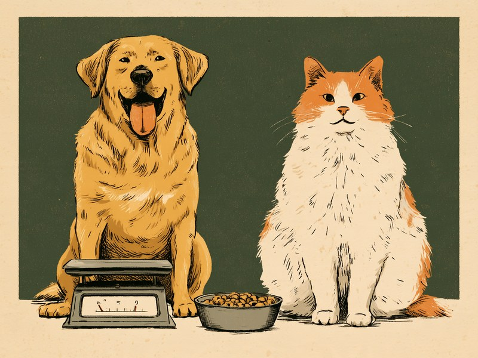

犬や猫の肥満は、とても身近でありながら気づきにくい問題です。毎日一緒に暮らしていると少しずつの変化は目に入りにくく、「ちょっとぽっちゃりしているだけ」と思っているうちに、心臓や関節、膵臓への負担が静かに積み重なっていきます。この記事では、太る原因、放置したときの体への影響、日常で気づくためのサイン、安全な減量の考え方、そして「よく食べること」自体が病気のサインになるケースを整理します。 Obesity in dogs and cats is common yet easy to overlook. Living together every day makes gradual changes hard to notice, and while we think "just a little chubby," the strain on the heart, joints, and pancreas quietly builds up. This guide covers why pets gain weight, what it does to the body, everyday signs to watch for, safe weight management, and the cases where a big appetite is itself a sign of illness.
なぜ太る?肥満の主な原因
肥満のいちばん基本的な仕組みは、食事から取り込むエネルギーが、体を動かして使うエネルギーを上回る状態が続くことです。フードの量はきちんと守っていても、しつけのご褒美や家族がそれぞれ与えるおやつが積み重なっていることもあります。おやつの分もふくめて「全体としてどれだけ食べているか」を見直すことが、原因を考える出発点になります。
猫では、食器にフードを入れっぱなしにして好きな時に食べさせる「置き餌(自由給餌)」が、肥満を助長するとされています。また、避妊・去勢手術のあとは代謝が変わり、太りやすい傾向になることが知られています。手術前と同じ量・同じ与え方を続けていたら、いつの間にか体重が増えていた、というのはよくあるパターンです。運動不足も、脂肪をため込む方向に働きます。
つまり肥満は、与え方・手術後の体の変化・運動量という、飼い主側で見直せる要素が重なって起きることが多いのです。加えて猫については、体の仕組みそのものにも太りやすさの理由があります。猫がブドウ糖を処理する能力は犬の半分以下とされ、余った糖は脂肪として蓄えられやすいと説明されています。
出典を見る
出典: アニコム損保 どうぶつ病気事典「肥満」 anicom-sompo.co.jp / アニコム損保 どうぶつ病気事典 anicom-sompo.co.jp / アイペット損保 ipet-ins.com / PEPPY「猫の肥満」 peppynet.com
肥満を放置するとどうなる?体への負担
「少し太っているくらいなら」「ぽっちゃりしていてかわいい」と思いがちですが、余分な脂肪は毎日休みなく、体のあちこちに負担をかけ続けます。栃木県獣医師会の解説では、肥満は心臓に負担をかけて心臓の老化を早めるとされています。また、関節にも大きな負荷がかかるため、関節炎(変形性関節症)につながります。
さらに、肥満は膵臓にも負担をかけ、糖尿病の原因になります。同じ解説では、糖尿病は「確実に寿命を縮める」病気だと明記されており、肥満が見た目の問題にとどまらず、命に関わる問題であることがわかります。このほか、皮膚病や、尿が出にくくなるトラブルのリスクも高まるとされています。
犬では、肥満に関連する病気として脂肪肝や椎間板ヘルニアも挙げられています。体重が増えるほど動きたがらなくなり、運動不足でさらに脂肪をため込みやすくなる、という悪循環に入りやすいのが肥満の厄介なところです。
出典を見る
出典: 栃木県獣医師会「ペットの肥満」 tochigi-vet.or.jp / アニコム損保 どうぶつ病気事典「肥満」 anicom-sompo.co.jp
見た目でわかるサイン(体重計だけに頼らない)
体重計の数字も大切ですが、日常で早めに気づくには、体に触れて確かめる方法も役立ちます。ペット保険会社の解説では、脂肪に覆われると肋骨(あばら)が触りにくくなるとされています。撫でるついでに、背中や胸のあたりを軽く触って肋骨の感触を確かめる習慣をつけておくと、変化に気づきやすくなります。
犬では、体重が増えるほど散歩に行きたがらなくなったり、動くのを嫌がったりする傾向があるとされています。「最近、散歩の途中で止まることが増えた」「遊びに誘っても乗ってこない」といった変化を年齢のせいだと思っていたら、実は体重の増加と重なっていた、ということもあります。
肋骨の触りやすさは、あくまで日常で気づくためのきっかけです。体型からの詳しい判定方法は「ボディコンディションスコア(BCS)」の記事もあわせてご覧ください。うちの子が今どの段階にいるのかを知っておくと、次の章の食事管理を考えるときの土台になります。
出典を見る
出典: ペット&ファミリー損保「犬の肥満」 pshoken.co.jp
減量・食事管理の基本
どこからが「肥満」なのか、目安となる数字があります。ペットフードメーカーのロイヤルカナンの解説では、猫は理想体重の20%以上、犬は理想体重の15%以上体重が上回っている状態を肥満の目安としています。数字はあくまで一つの目安であり、最終的な判断は動物病院で相談するのが確実です。うちの子の理想体重が分からない場合も、動物病院で確認しておくと判断しやすくなります。
食事管理の基本は、置き餌をやめて、量を計ったフードを決まった時間に与えることです。「だいたいこのくらい」と目分量で入れていると、日によって量がぶれやすいので、計量カップやキッチンスケールで毎回同じ量にするのがおすすめです。おやつも1日のカロリーに含めて数え、家族の間で「誰がどれだけあげたか」を共有しておくと、知らないうちに摂りすぎることを防げます。
ここで、猫を飼っている方にぜひ知っておいてほしい注意点があります。猫は、減量のためであっても、急に食事を制限したり絶食させたりしてはいけません。数日食べない状態が続くだけでも「肝リピドーシス(脂肪肝)」という肝臓の病気を引き起こすことがあり、重症化すると命に関わるとされています。猫の減量は、必ず動物病院と相談しながら、獣医師の管理のもとで進めてください。犬についても、自己流で急激に減らすのではなく、目標体重や減らし方を獣医師と一緒に決めるのが安心です。
出典を見る
出典: ロイヤルカナン「肥満の判断基準」 library.royalcanin.jp / アニコム損保 どうぶつ病気事典「肝リピドーシス」 anicom-sompo.co.jp / FPC「猫の肝リピドーシス」 fpc-pet.co.jp
「よく食べるのに痩せる」は要注意:食欲旺盛が病気のサインのことも
ここまでは「食べすぎて太る」話でしたが、食欲が明らかに増しているのに体重が減っていく場合は、まったく別の問題を考える必要があります。「食欲があるなら元気な証拠」と思いたくなりますが、食べ方と体重の組み合わせによっては、病気のサインとして受け止めたほうがよいことがあります。猫の糖尿病では、糖が細胞に取り込まれず使えないため、たくさん食べているのに痩せていくという症状が現れます。肥満は猫の糖尿病のリスク要因のひとつとされており、太っていた猫が急に痩せ始めたときは特に注意が必要です。
犬では、クッシング症候群という病気で食欲が増すことがあります。ほとんどの場合、水をたくさん飲んで尿が増える(多飲多尿)症状を伴います。初期には体重が増えて太ったように見えますが、進行すると筋肉が落ち、お腹だけがふくらんだような体型になっていきます。中齢(8歳くらい)から発生が増える傾向にあるとされており、シニア期に「食べる量も飲む量も増えた」と感じたら、年齢のせいと決めつけずに相談してみてください。
猫では、甲状腺機能亢進症も食欲が増す代表的な病気です。よく食べるのに体重が減っていくのが特徴で、7歳以上の高齢猫のおよそ1割に見られるとされています。ポイントは「食べているのに痩せる」という組み合わせです。ぽっちゃりしてきただけなら食事管理の範囲ですが、旺盛な食欲と体重減少が同時に見られる場合は、量を減らして様子を見るのではなく、動物病院で検査を受けることが大切です。
出典を見る
出典: アイペット損保 うちの子HAPPY VET NOTE「猫の糖尿病」 uchihap-vetnote.ipet-ins.com / アニコム損保「犬のクッシング症候群」 anicom-sompo.co.jp / 119.vc「猫の甲状腺機能亢進症」 119.vc
- 食事の内容や量を変えていないのに、体重が急に増えてきた(クッシング症候群などホルモンの病気の可能性)
- 食欲が明らかに増しているのに、体重が減っていく(糖尿病・甲状腺機能亢進症の可能性)
- 猫がダイエット中に食べない状態が続いている(数日でも肝リピドーシスの危険があるため、食事制限をやめてすぐ連絡を)
- 体重が増えてから、散歩や遊びをひどく嫌がるようになった
これらに気づいたら、自己判断で食事の量を変えずに、まず動物病院に相談してください。
肥満対策は「今どのくらい太っているか」を知るところから始まります。体型の見方はボディコンディションスコア(BCS)の記事で確認できます。反対に、急に食べなくなった場合のサインは犬猫の体調不良のサインもあわせてどうぞ。食べすぎも食べなさすぎも、「いつもと違う」に早く気づくことが出発点です。
ミニクイズ:猫のダイエットのために、ある日から急に食事の量を半分にしてもよい?(タップして答えを見る)
こたえ×。急な食事制限は肝リピドーシスの危険があるため避けたいところです。猫の減量は必ず動物病院と相談し、獣医師の管理のもとで少しずつ進めてください。